Lojas & Shoppings
Segurança e estética para o varejo de alto fluxo.
Referência em durabilidade com aço galvanizado e motores de alta performance, com garantia de fábrica. Orçamento rápido e instalação técnica especializada.
Empresas e instituições que confiam na engenharia K Portas®

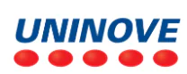


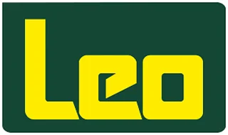
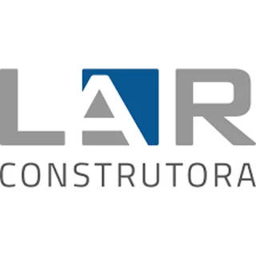
A Segurança que as construtoras e os grandes comércios exigem.
Atendemos cada segmento com engenharia dedicada, da especificação à instalação.
Segurança e estética para o varejo de alto fluxo.
Portas de grandes vãos com máxima resistência.
Conforto e proteção para o ambiente interno e o externo.
Garagens, casas e condomínios com portas sob medida, conforto acústico e segurança para a família.
Suporte técnico e alinhamento de projeto.
Comunicação fluida e facilidade na execução.
Serviços executados sob supervisão técnica, garantindo a segurança operacional do seu imóvel.
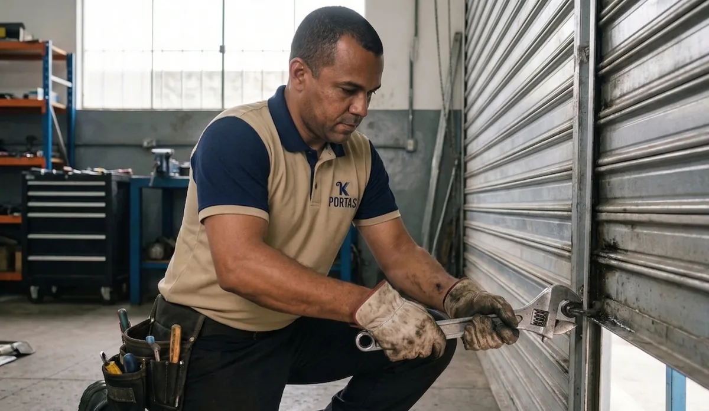
Evite paradas inesperadas com planos de revisão técnica periódica, lubrificação e ajuste de motores.
Atendimento ágil para reparos emergenciais, troca de molas, lâminas e componentes eletrônicos.
Nossas portas são entregues completas e personalizadas para o seu projeto, desde o acabamento estético até as normas de segurança obrigatórias.
Acabamento premium com alta durabilidade e resistência à corrosão. Diversas cores disponíveis.
Soluções de acesso social e emergência integradas à estrutura da porta, com segurança reforçada.
Motores padrão e de alto fluxo, desenvolvidos para comércio, lojas e galpões, com e sem nobreak de máxima confiabilidade. A K Portas® trabalha com as melhores marcas e componentes. Todos os motores acompanham a garantia de fábrica.
Atendimento FOB rápido e inteligente, entregando kits montados para todo o território brasileiro.
Fabricação e parametrização com garantia de conformidade técnica ativa nas NRs 10, 12 e 35.
Reforço estrutural com barras e travas específicas para locais descampados ou com alta incidência de ventos, garantindo a estabilidade da porta. Exija uma porta de aço reforçada contra vento com rígida trava antivento para porta de enrolar.
Escolha entre lâminas fechadas, transvision (microperfuradas), todas compatíveis com nossos sistemas de reforço estrutural.
Soluções completas com estoque à pronta entrega para serralherias e construtoras.
Consultoria técnica e venda de materiais com ou sem instalação. Orçamentos sob medida para o seu projeto.
A solução completa e prática para o profissional. Kit sob medida com lâminas, guias, eixo e acessórios, pronto para a instalação.
Tecnologia de alta performance, motores com potência e eficiência energética.
Aço 100% galvanizado de alta resistência nos modelos raiada, transvision e fechada.
Controles, centrais de comando, antiquedas e travas de segurança.
Eixos tubulares, guias laterais e soleiras reforçadas em aço galvanizado sob medida.
Materiais certos evitam atrito e retrabalho e transformam uma montagem comum em entrega com padrão de fábrica, pronta para virar indicação.
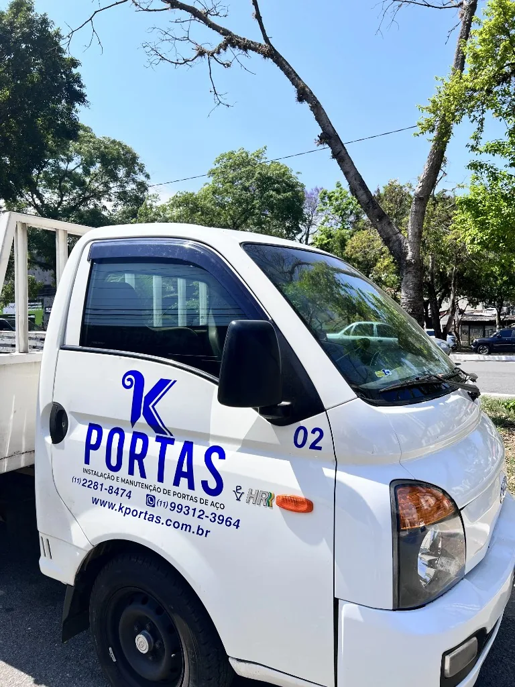
Logística ágil e equipes prontas para grandes obras em toda a malha paulista.
Galeria de instalações técnicas, provando nossa capacidade executiva nas maiores obras paulistas. Todas as fotos são de obras realizadas pela K Portas®.
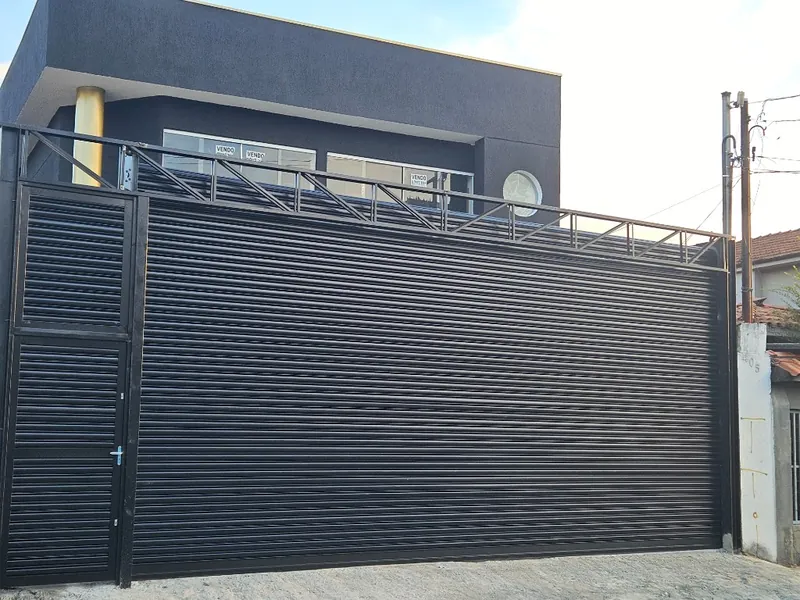
Porta com Portão Social e Estrutural
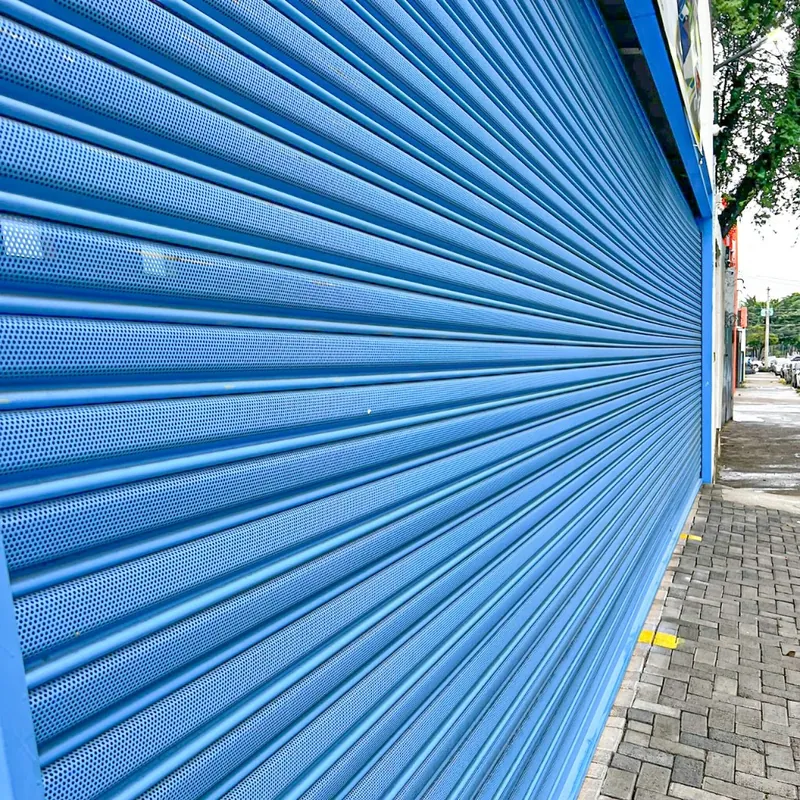
Comércio com Pintura Eletrostática
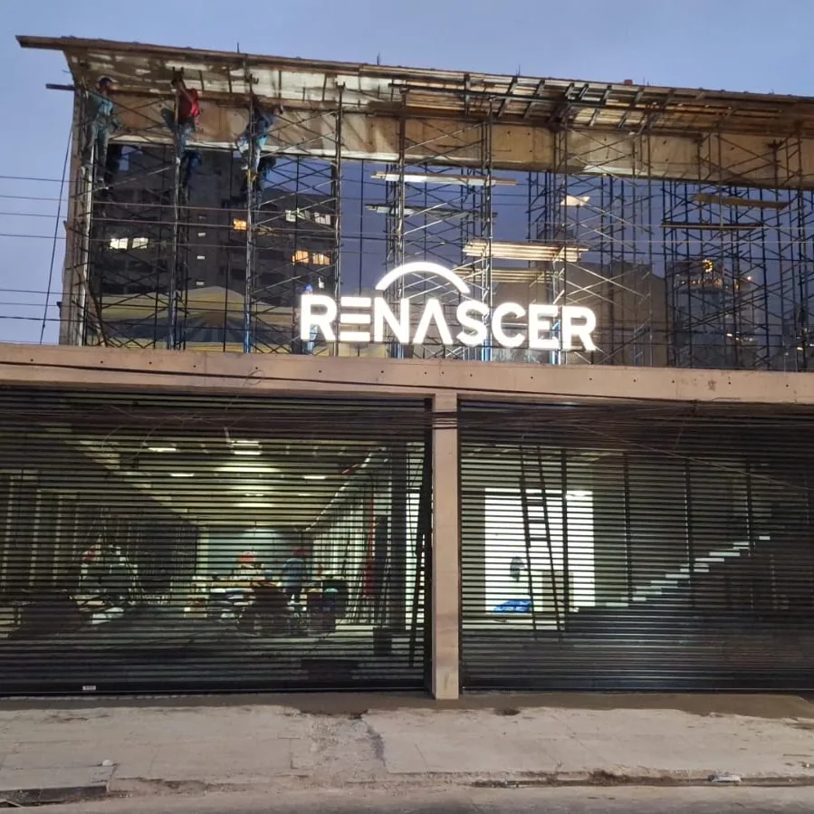
Igrejas em São Paulo
Porta Transvision - Shopping SP
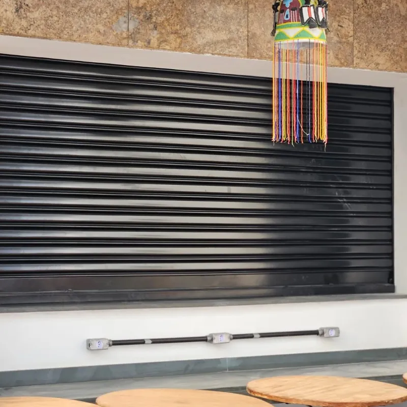
Projeto sob Medida Porta Balcão
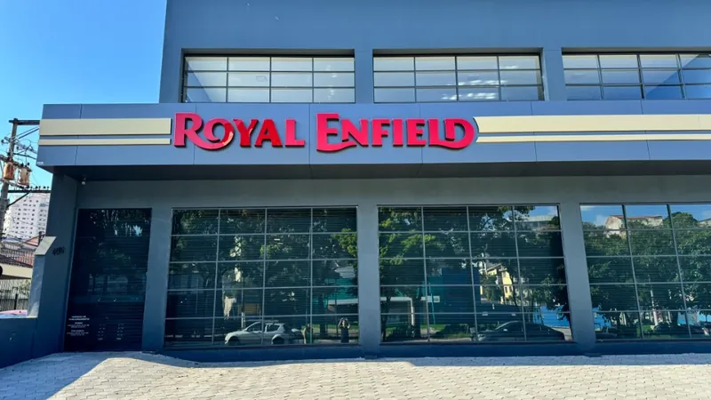
Porta de Loja
Mais fotos de obras e do dia a dia na nossa fábrica no Instagram @kportas_.
Nosso Diferencial: Visita Técnica de Conferência após o fechamento do pedido. Realizamos a medição fina e consultoria no local antes de iniciar a fabricação, garantindo 100% de precisão e segurança. Medição e conferência técnica acompanhada por nossa engenharia.
Nossa equipe é periodicamente treinada e certificada, garantindo total conformidade com as normas de SSMA e com a saúde ocupacional — PCMSO, LTCAT e ASO — para atuar em obras de engenharia, indústrias e condomínios com segurança máxima.
Especialistas em Trabalho em Altura.
Uso rigoroso de EPIs e proteção individual em todas as etapas.
Conformidade em Máquinas e Equipamentos.
Programa de Controle Médico de Saúde Ocupacional em dia com a legislação.
Laudo Técnico das Condições Ambientais do Trabalho para avaliação de riscos.
Atestado de Saúde Ocupacional para comprovar aptidão às funções executadas.
O preço de uma porta de enrolar automática varia conforme o tamanho do vão, o modelo escolhido (transvision ou fechada), o tipo de motor e o acabamento (pintura eletrostática). Por isso, não trabalhamos com tabelas genéricas por m² — cada projeto recebe um orçamento personalizado, com visita técnica incluída. Entre em contato pelo WhatsApp para receber sua prévia com valores reais para o seu espaço.
A porta Transvision possui lâminas microperfuradas que permitem visibilidade do interior mesmo com a porta fechada — ideal para vitrines de shoppings e lojas de alto padrão que precisam de segurança sem abrir mão da exposição dos produtos. Já a porta de aço fechada oferece privacidade total, maior isolamento acústico e mais resistência, sendo mais indicada para galpões logísticos, indústrias e comércios que priorizam segurança e isolamento.
Após a Visita Técnica de Conferência e a fabricação personalizada, a instalação de uma porta de aço automática leva em média 1 a 2 dias úteis para projetos padrão. O prazo total — do fechamento do pedido até a instalação completa — é de 3 a 7 dias úteis para a Grande São Paulo, executado por equipe técnica própria e certificada.
A K Portas® está sediada em São Paulo — Mandaqui, Zona Norte, e atende com instalação especializada toda a Grande SP, incluindo ABC Paulista, Guarulhos, Campinas, Sorocaba, Jundiaí, Baixada Santista e Litoral Norte. Para o restante do Brasil, fornecemos kits completos via transportadora (Modalidade FOB) com coleta em nossa fábrica em São Paulo.
Sim! Possuímos logística própria para atender todo o estado de SP, incluindo Interior e Litoral, com equipes treinadas para instalação e assistência técnica rápida.
Sim! Atendemos todo o território nacional com o fornecimento de kits e materiais completos. A coleta é realizada por transportadora de preferência do cliente (Modalidade FOB) em nossa unidade fabril.
Sim, realizamos manutenção corretiva e preventiva em portas de aço automáticas e manuais, garantindo o funcionamento seguro do seu estabelecimento.
Aceitamos cartões de crédito, boleto bancário (sob consulta) e oferecemos condições especiais para faturamento direto para empresas e condomínios. Garantimos o melhor Preço para Serralheiro em peças e no Kit de Porta de Enrolar.
Sua dúvida não está aqui?
Fale conosco agora pelo WhatsApp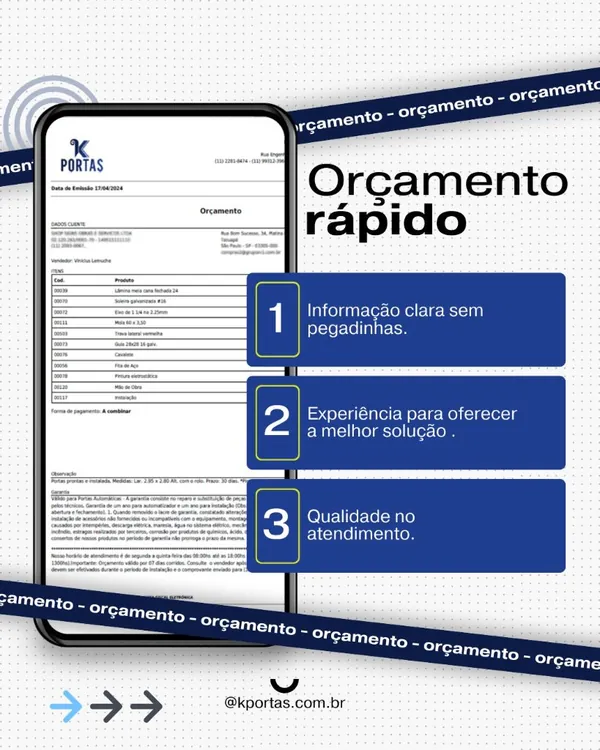
Deixe seu contato para uma consultoria técnica gratuita.
Avaliações reais no Google
"Material de excelente qualidade, pontualidade na entrega e equipe de instalação muito educada. Recomendo!"
"Fábrica de confiança. Cumpriram o prazo e a pintura eletrostática ficou impecável. Já indiquei para outros lojistas do shopping."
"Atendimento nota 10 desde o orçamento até a entrega técnica. Preço justo pela qualidade entregue."
"Peguei o telefone da K Portas® na Internet. Eu não conhecia ninguém que tivesse contratado eles. ME SURPREENDEU POSITIVAMENTE. Eles fizeram hoje a automatização de minha porta de enrolar. Cumpriram o prazo e os valores acordados por WhatsApp. O serviço ficou excelente."
"Super recomendo! Uma ótima empresa, com atendimento excepcional. Precisei contar com o serviço da K Portas® por duas vezes para manutenção da porta automática da minha garagem, e em ambas as vezes fui muito bem atendida. Todos os profissionais, desde o primeiro contato, até execução do serviço sempre muito educados e atenciosos. Serviços executados de forma rápida e excelente. E o melhor, com preço justo!"
"Não acreditei que desde o orçamento até a instalação seria tão rápido, enviaram um profissional para tirar todas as medidas no dia seguinte, o instalador explicou tudo sobre como utilizar com segurança e para maior durabilidade da minha porta de aço, meu comércio ficou muito mais chamativo, deu um novo ar no ambiente. Muito obrigado K Portas® de aço."